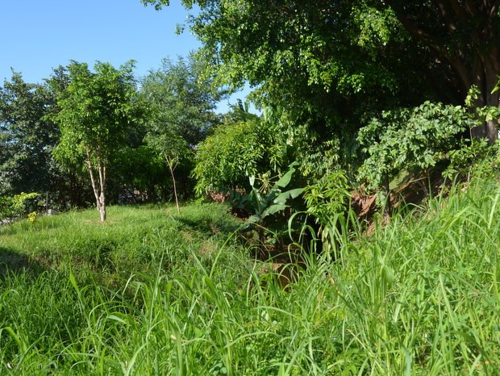

Como surgiu o Mato?
O mato, um termo comum para vegetação densa e de baixa estatura, é uma parte significativa dos ecossistemas terrestres em todo o mundo. No entanto, sua origem e evolução ao longo do tempo são temas de interesse científico. Neste artigo, exploraremos as teorias e evidências científicas por trás do surgimento do mato, considerando fatores como adaptações evolutivas das plantas, mudanças ambientais e interações com outras espécies.
Adaptações Evolutivas das Plantas:
Uma das explicações para o surgimento do mato reside nas adaptações evolutivas das plantas que compõem essa vegetação. Muitas espécies de plantas desenvolveram características morfológicas e fisiológicas que lhes permitem prosperar em ambientes onde a competição por recursos é intensa. Por exemplo, as plantas herbáceas de crescimento rápido muitas vezes dominam áreas perturbadas, como clareiras de florestas ou terrenos agrícolas abandonados. Suas taxas de crescimento rápido lhes conferem uma vantagem competitiva sobre outras plantas, permitindo-lhes colonizar rapidamente um espaço e formar densas coberturas vegetais, típicas do mato.
Mudanças Ambientais:
As mudanças ambientais desempenham um papel crucial na evolução e na distribuição do mato. Por exemplo, distúrbios naturais, como incêndios florestais, inundações ou eventos climáticos extremos, podem perturbar ecossistemas existentes, abrindo espaço para a colonização por plantas pioneiras, que frequentemente são as primeiras a formar o mato. Além disso, mudanças climáticas ao longo do tempo podem alterar os padrões de precipitação e temperatura, influenciando a distribuição e a composição das comunidades vegetais. Em muitos casos, o mato pode se expandir em resposta a essas mudanças, adaptando-se a novas condições ambientais e preenchendo nichos ecológicos disponíveis.
- Frio
- Calor
- nano